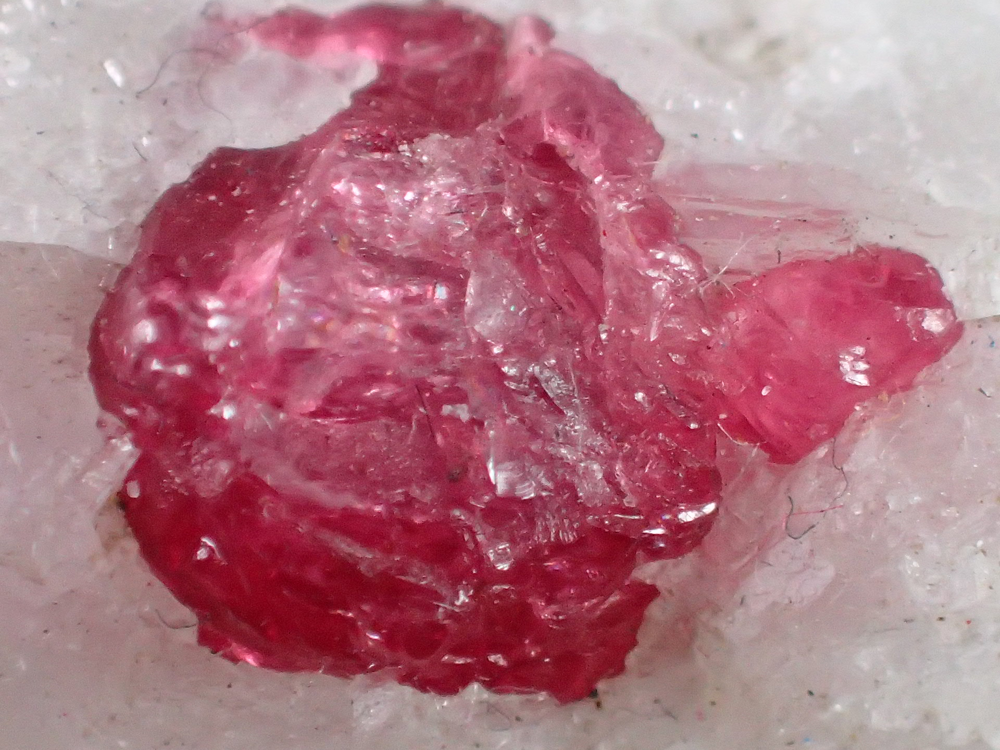

化学式
Al2O3:Cr
ルビーは、コランダム（Al2O3）にクロム（Cr）が含まれており、その赤色を形成しています。
宝石言葉・石言葉
「愛」「情熱」「勇気」「成功」「活力」「幸福」
Al2O3:Cr
ルビーは、コランダム（Al2O3）にクロム（Cr）が含まれており、その赤色を形成しています。
「愛」「情熱」「勇気」「成功」「活力」「幸福」
ミャンマー、タイ、スリランカ、ベトナム、タンザニア等
ルビーは、7月の誕生石として広く知られており、その鮮やかな赤色が特徴です。ルビーは古代から高貴さと情熱を象徴する宝石とされ、多くの文化で高く評価されてきました。その名前はラテン語の「ruber」（赤）に由来しています。
ルビーには、複数の種類があり、色も赤だけではなく、ピンクや紫などさまざまです。しかし、7月の誕生石としては、やはり深い鮮やかな赤色のルビーが最も一般的です。
ルビーは、持ち主に勇気と活力をもたらし、愛と情熱を深める力があると信じられています。また、困難な状況でも決断力と自信を与え、成功を引き寄せる力があるとも言われています。
ルビーは、情熱や活力を求める人、愛や成功を追求する人、または自信と決断力を必要とする人に特におすすめです。この石を身につけることで、内なる力を高め、目標達成への助けとなるでしょう。。